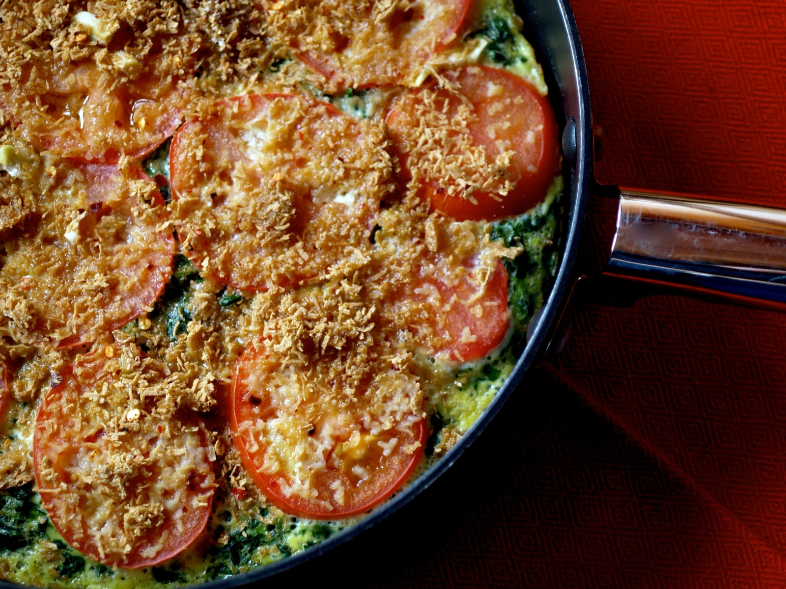
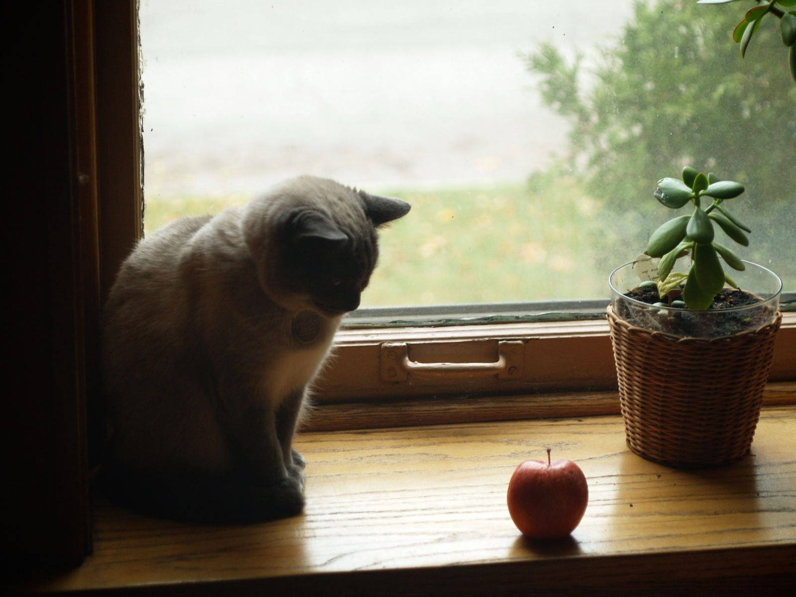

Savory Florentine Gratin

It's hard to believe that my first semester of graduate school is nearing an end. After one more class and two more papers, I'll be in Chicago working at a soon-to-be-finalized internship and falling back into familiar habits. I'm looking forward to having a bit of time to focus on a few personal projects and to running on the Chicago lakefront as I train for the Illinois Marathon in April.

A few months ago, I received a review copy of Silvana Nardone's Cooking for Isaiah in the mail; a cookbook of gluten-free and dairy-free meals and the antithesis of my typical diet. I have a few friends with a gluten or dairy intolerance and I was drawn to some of the simpler recipes in the book. This Florentine Cake is quick, delicious, and it doesn't require any special ingredients.
You are probably wondering why I'm posting a recipe that calls for fresh tomatoes in December. When I visited the winter farmer's market in Urbana this past weekend, one farm had some very nice greenhouse tomatoes. I bought a few with this recipe in mind. However, the dish would be great with oil-packed sun-dried tomato halves or even thin slices of winter squash.
Florentine Cake with Tomato-Garlic Gratin
Adapted from Cooking for Isaiah
(The original recipe called for 8 eggs and 1 clove of garlic)
Ingredients:
1/2 C rice cereal crumbs
3 cloves garlic, grated
1/2 tsp crushed red pepper flakes
Salt
1 Tbl olive oil, plus extra for drizzling
5 large eggs, at room temperature, lightly beaten
10 ounces frozen, chopped spinach, thawed and pressed dry
2 medium tomatoes, sliced 1/4 inch thick
Method:
Preheat oven to 350F
In a small bowl, combine the first four ingredients and set aside.
In a medium ovenproof skillet, heat the oil over medium-low heat. In a large bowl, combine the eggs, spinach, and 1 tsp of salt. Pour the egg mixture into the hot skillet, shake to even out, and place the tomatoes on top. Cook without stirring for about 4 minutes, or until the edges are set and the center is beginning to set.
Top with the garlic crumbs and drizzle with olive oil. Bake for ten minutes or until golden and set in the center. Serve warm.